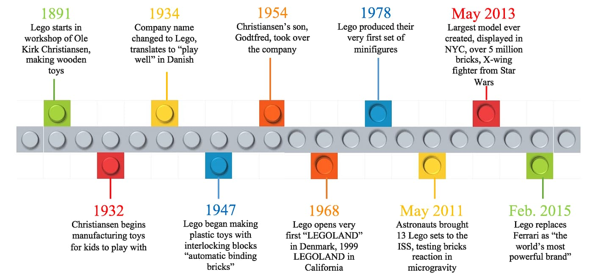
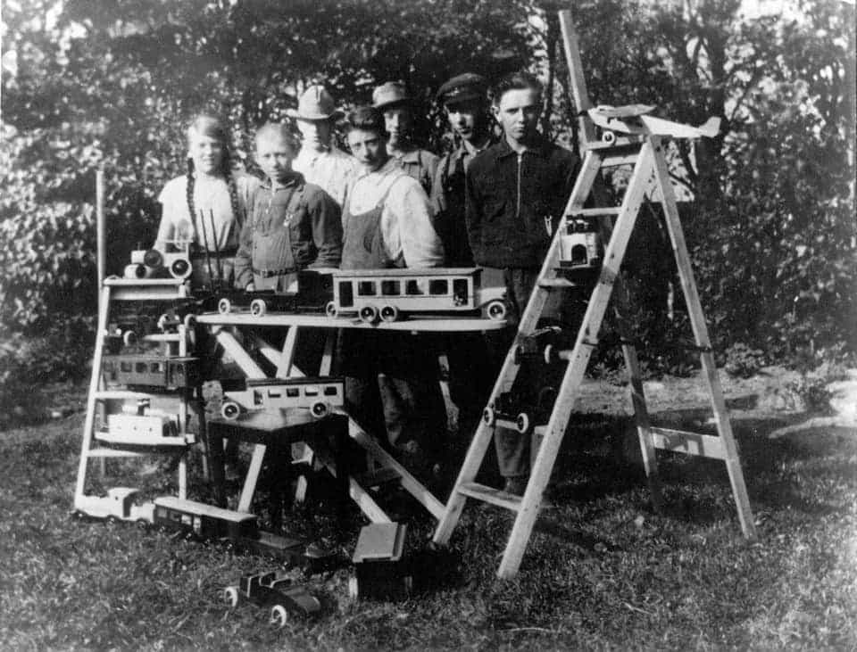
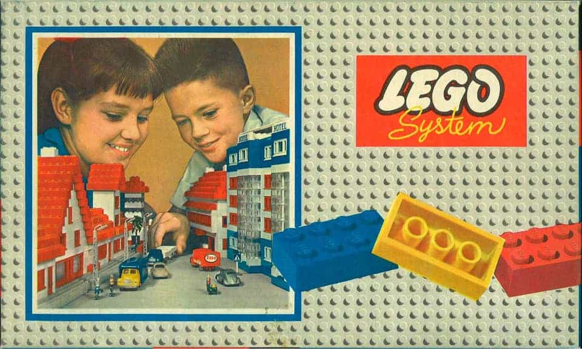
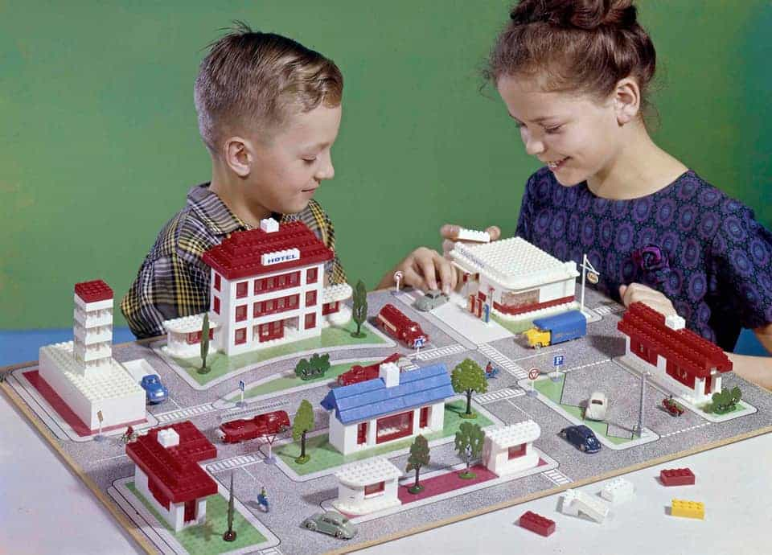
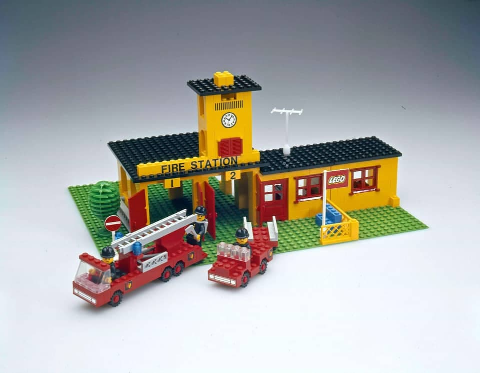
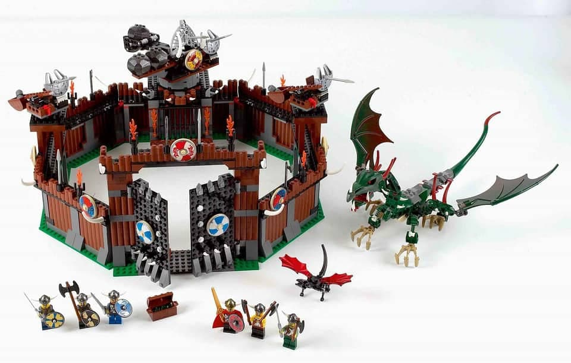
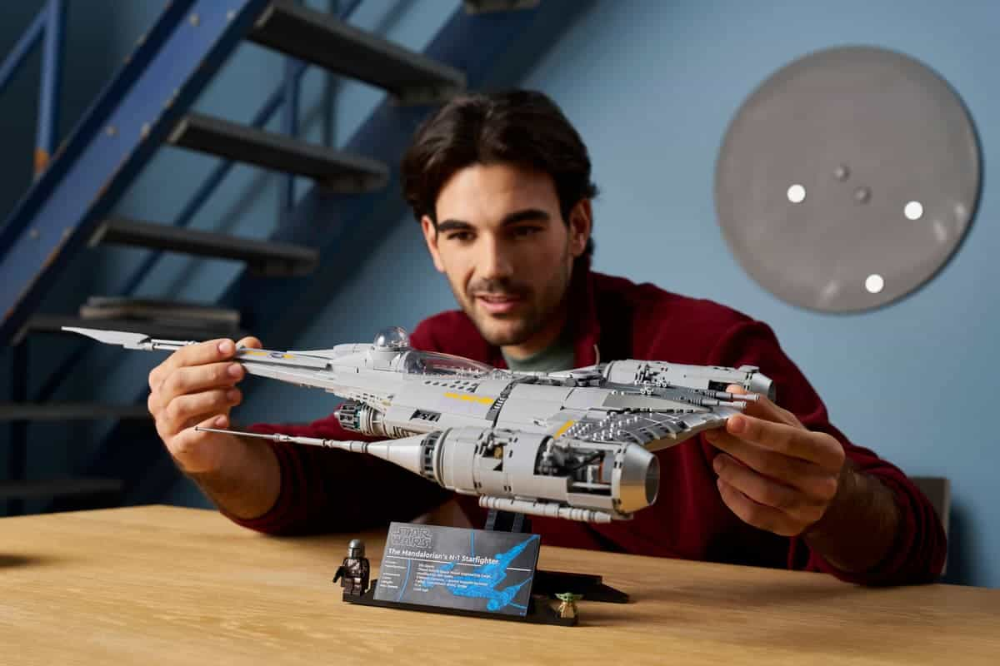

The Beginning of the LEGO Group

In 1932, Ole Kirk Kristiansen began producing and selling wooden toys. The wooden toys were a part of the LEGO® product line until August 1959, when the wooden toys were renamed BILOfix, and extracted from the LEGO product line. After the fire in the Wooden Toy Factory in February 1960, the Wooden Toy products were discontinued.
The Stud and Tube Principle
Godtfred Kirk Christiansen's firm belief in the plastic brick and the LEGO® System in Play drives the company to search for a way to ensure just the right clutch power between the bricks. The LEGO System’s basic element needs improving in order to live up to the product idea and the company’s quality standard. All bricks up until this point are hollow, reducing the stability of constructed models and this generates complaints from the markets, and competitors are moving in.

The Patent
At a meeting on January 23rd 1958, Godtfred Kirk Christiansen and head of the German sales office Axel Thomsen discuss possible solutions to the stability issue mentioned in feedback from the markets. Godtfred draw up several solutions on a piece of paper, among them the tubes we all know today. Combined, the studs and tubes create clutch power. Clutch power provides stability and endless possibilities for combining bricks. With the new stud and tube principle it is possible to combine six 2x4 bricks in 915.103.765 different ways. After inventing the tube solution, Godtfred Kirk is anxious. The ingenious interlocking principle has to be properly protected. On January 28, 1958 at 1:58 pm, the LEGO Group submits a patent application for “a toy building element”. The LEGO® brick as we know it today is born.
Lego Sets Past and Present



